← 返回新版介绍页 · 此页为旧形态/画风历史快照, 不再维护(生成于 2026-08-07 06:58 UTC)
L1
实拍演示 · 引擎阶段(80s 仿真)
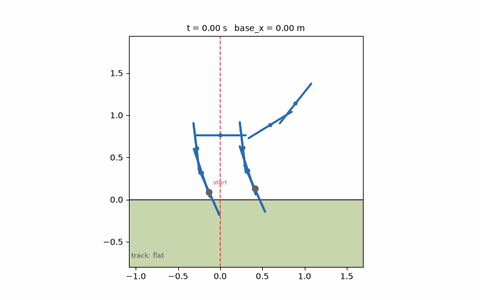
galloper · flat — 对角相位锁定 · 巡航稳定相位锁定的马(galloper/trotter)平均速度约为随机相位的 4 倍
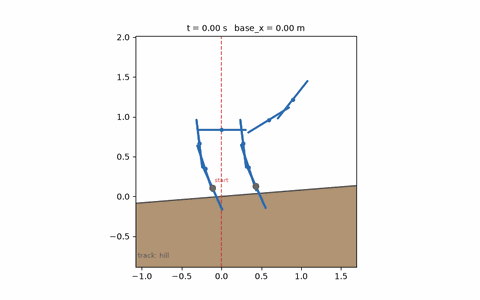
longlegs · hill — 上坡失速 · 速度-地形权衡平地最快的 longlegs(avg 0.94 m/s)上坡掉到 0.32 —— 腿长是双刃剑
trotter · flat — 对角步态 · 中等稳定trotter 介于 galloper 与 random 之间, 全地形 DNF 但姿态稳定
random · flat — 相位混乱 · 瘫痪对照随机相位(random)在三条赛道几乎无法前进(avg ≈0.13 m/s)
L2
形态组: 原版默认 + 形态基因改造(2026-08 快照)
同一套基因系统, 形态基因经隐藏发育映射解码成 15 段骨架。此页为历史快照, 不再维护。
原版默认全部形态基因=中性 · 大躯干/短粗颈/大头
全中性

躯干 0.80 m · 颈 0.43 m · 头 0.38 m · 前腿 0.72 m · 体重 54 kg
flat: 摔倒 · 1.1 m · top 1.59 m/s
长颈NECK_GIRAFFE=120 + NECK_LENGTH=90 · 栗色(BASE_BROWN=2)
NECK_GIRAFFENECK_LENGTH
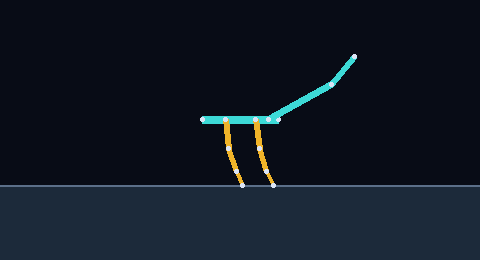
躯干 0.80 m · 颈 0.76 m · 头 0.38 m · 前腿 0.72 m · 体重 58 kg
flat: 摔倒 · 5.5 m · top 1.91 m/s
侏儒GIANT_DWARF=66 · 全身 0.66× · 白毛(WHITE=1)
GIANT_DWARF
躯干 0.53 m · 颈 0.28 m · 头 0.25 m · 前腿 0.58 m · 体重 34 kg
flat: 摔倒 · 0.5 m · top 1.59 m/s
巨人GIANT_DWARF=133 · 全身 1.33× · 黑毛(BASE_BLACK=1)
GIANT_DWARF
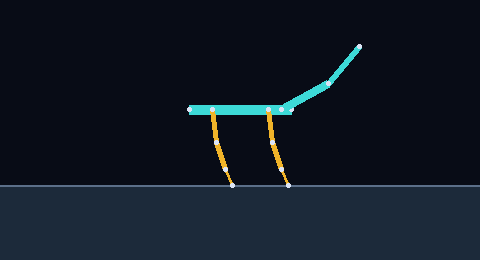
躯干 1.06 m · 颈 0.57 m · 头 0.51 m · 前腿 0.83 m · 体重 80 kg
flat: 摔倒 · 5.2 m · top 2.00 m/s
长腿LEG_LENGTH=120 + STRETCH 16+16 · 白斑(PAT_SPOT=90)
LEG_LENGTHLEG_STRETCHLEG_STRETCH2
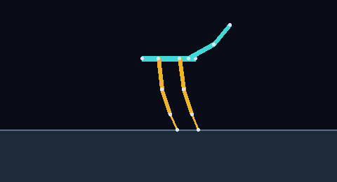
躯干 0.80 m · 颈 0.43 m · 头 0.38 m · 前腿 1.12 m · 体重 84 kg
flat: 摔倒 · 0.0 m · top 0.49 m/s
细长SKINNY=200 + ASPECT=310 · 条纹(PAT_STRIPE=90)
ASPECTSKINNY
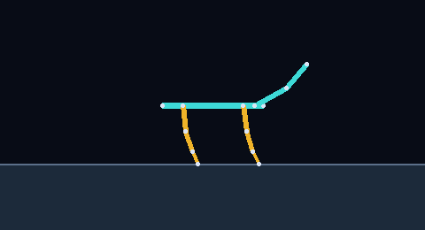
躯干 1.20 m · 颈 0.43 m · 头 0.38 m · 前腿 0.72 m · 体重 53 kg
flat: 2.3 m(未完赛) · top 1.59 m/s
大头HEAD_GIANT=200 + HEAD_SIZE=133 · 灰毛(无褐无黑)
HEAD_GIANTHEAD_SIZE
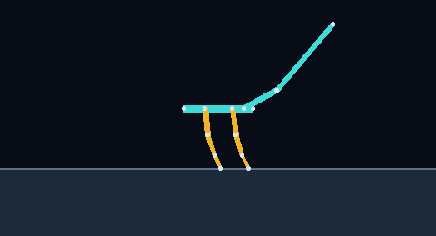
躯干 0.80 m · 颈 0.43 m · 头 1.01 m · 前腿 0.72 m · 体重 62 kg
flat: 摔倒 · 0.8 m · top 1.71 m/s
铅笔腿LEG_PENCIL=10 · 腿密度×0.45 · 黄斑(SPOT_YELLOW=1+PAT_SPOT=51)
LEG_PENCIL
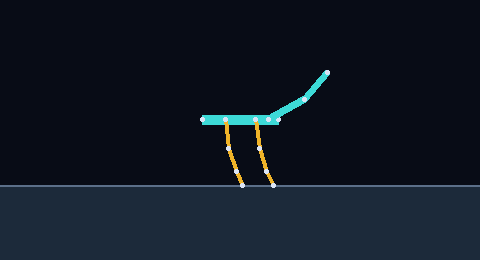
躯干 0.80 m · 颈 0.43 m · 头 0.38 m · 前腿 0.72 m · 体重 39 kg
flat: 摔倒 · 1.0 m · top 1.85 m/s
无蹄HAS_FOOT=0 · 蹄缩成 stub · 栗色+黑蹄(HOOF_COLOR=0)
HAS_FOOT
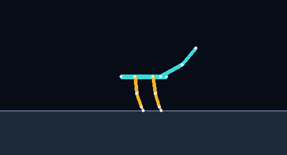
躯干 0.80 m · 颈 0.43 m · 头 0.38 m · 前腿 0.62 m · 体重 50 kg
flat: 摔倒 · 0.8 m · top 1.30 m/s
L3
devcode 层 · v2.5 存档(144 碱基发育代码)
随机 DNA #1devcode · 144 碱基
144 碱基48 密码子sin 混合发育
躯干 0.46 m · 前腿 1.58 m · 体重 617 kg
flat: 2.1 m(未完赛) · top 2.12 m/s
随机 DNA #6devcode · 144 碱基
144 碱基48 密码子sin 混合发育
躯干 0.88 m · 前腿 2.62 m · 体重 747 kg
flat: 1.2 m(未完赛) · top 1.32 m/s
L4
种子马(agent 的实验材料, 确定性构造)
random 种子马
trotter 种子马
galloper 种子马
longlegs 种子马
wheelcar 种子马
humanoid 种子马
L5
可视化检查: 原版画风复现 + 跑图动画
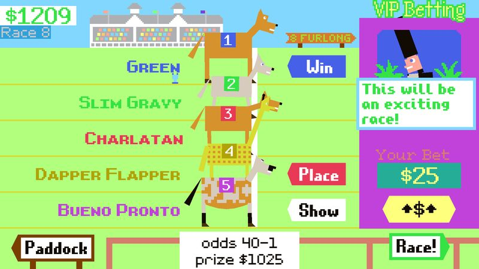
原版参考steam_ss0.jpg · Steam 商店(store.steampowered.com/app/3602570)
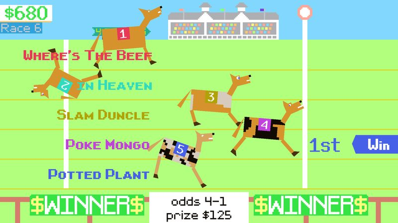
原版参考steam_ss1.jpg · Steam 商店(store.steampowered.com/app/3602570)
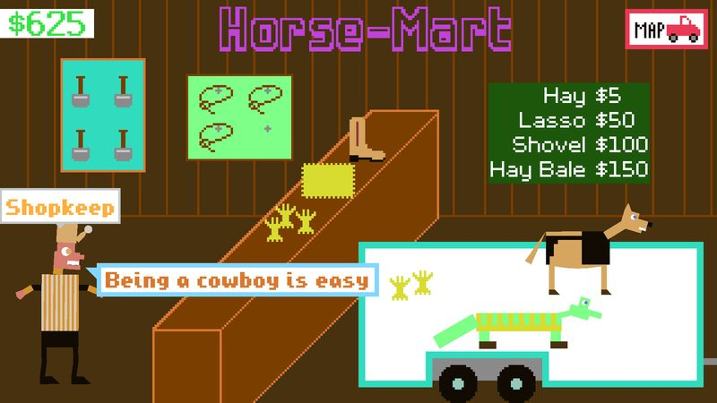
原版参考steam_ss13_horse.jpg · Steam 商店(store.steampowered.com/app/3602570)
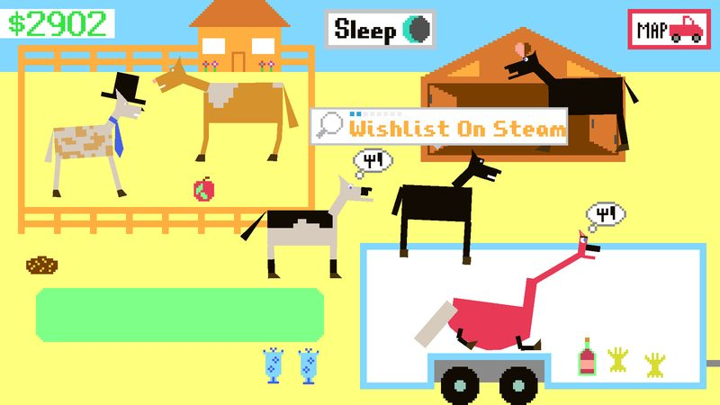
原版参考steam_ss2.jpg · Steam 商店(store.steampowered.com/app/3602570)
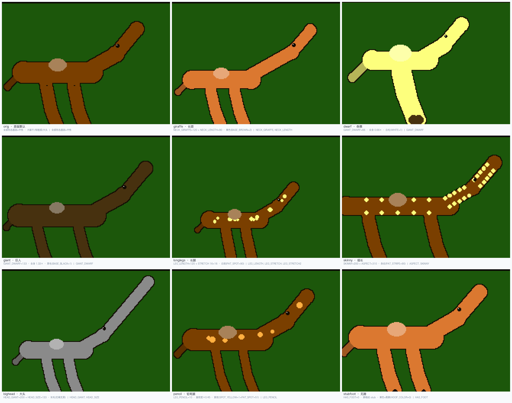

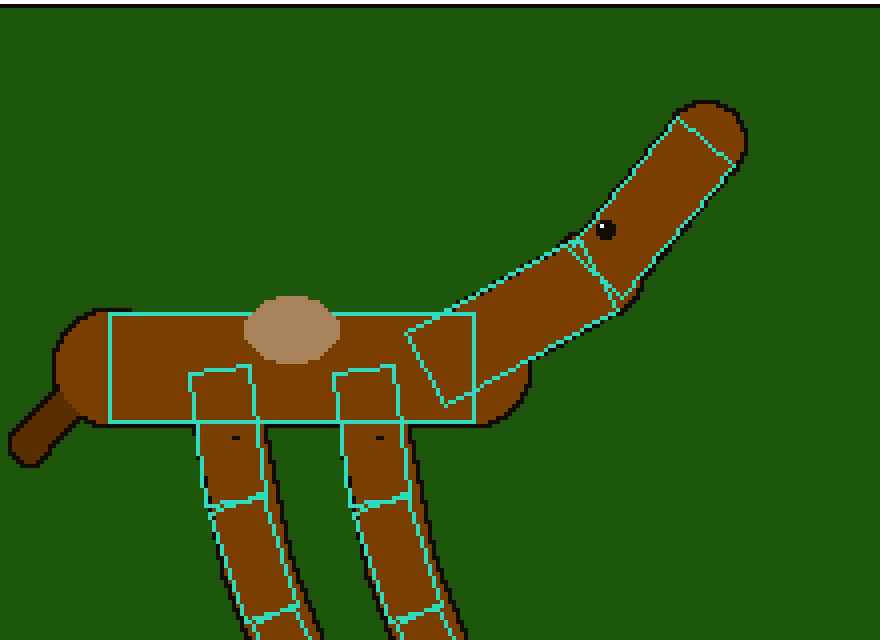
物理边界 = 方框原版默认 · 青绿描边是 Box2D b2PolygonShape 的真实碰撞体, 圆角只是视觉翻译(粗细=方框高度)
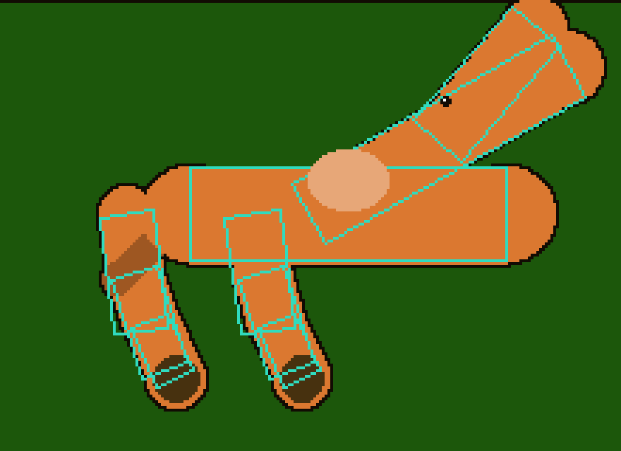
物理边界 = 方框长颈 · 青绿描边是 Box2D b2PolygonShape 的真实碰撞体, 圆角只是视觉翻译(粗细=方框高度)
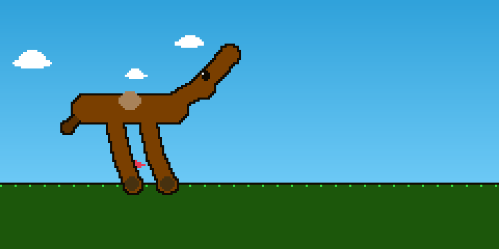
orig · 原版默认
躯干 0.80 · 颈 0.43 · 腿 0.72 m · 距离 1.1 m · 摔倒 · 80s 仿真重放
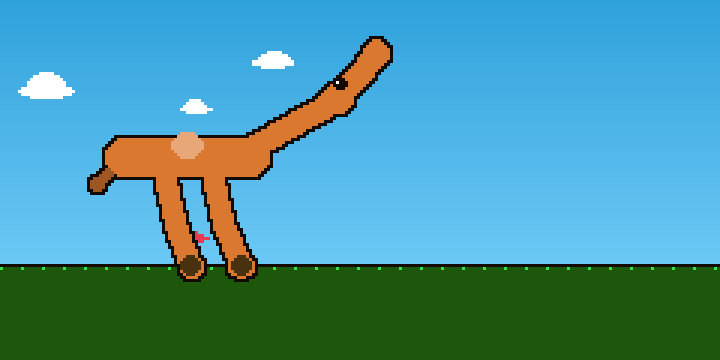
giraffe · 长颈
躯干 0.80 · 颈 0.76 · 腿 0.72 m · 距离 5.5 m · 摔倒 · 80s 仿真重放
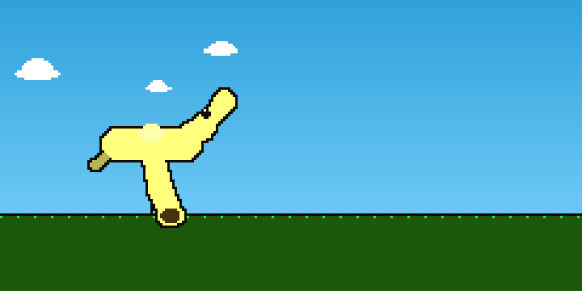
dwarf · 侏儒
躯干 0.53 · 颈 0.28 · 腿 0.58 m · 距离 0.5 m · 摔倒 · 80s 仿真重放
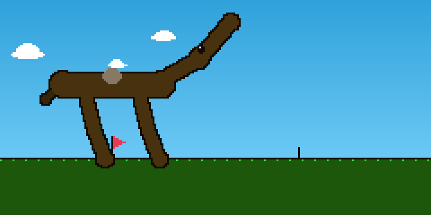
giant · 巨人
躯干 1.06 · 颈 0.57 · 腿 0.83 m · 距离 5.2 m · 摔倒 · 80s 仿真重放
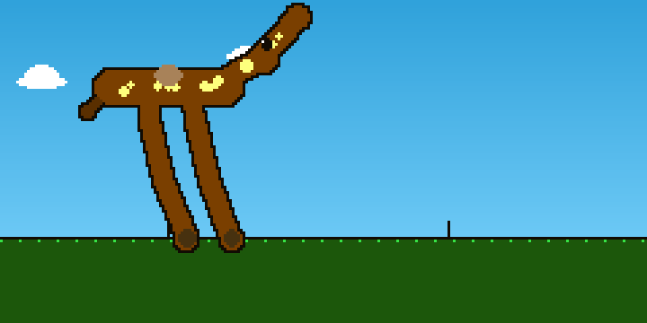
longlegs · 长腿
躯干 0.80 · 颈 0.43 · 腿 1.12 m · 距离 0.0 m · 摔倒 · 80s 仿真重放
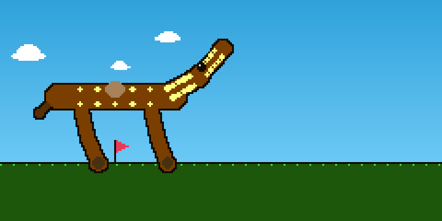
skinny · 细长
躯干 1.20 · 颈 0.43 · 腿 0.72 m · 距离 2.3 m · 未完成 · 80s 仿真重放
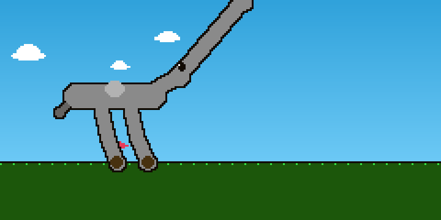
bighead · 大头
躯干 0.80 · 颈 0.43 · 腿 0.72 m · 距离 0.8 m · 摔倒 · 80s 仿真重放
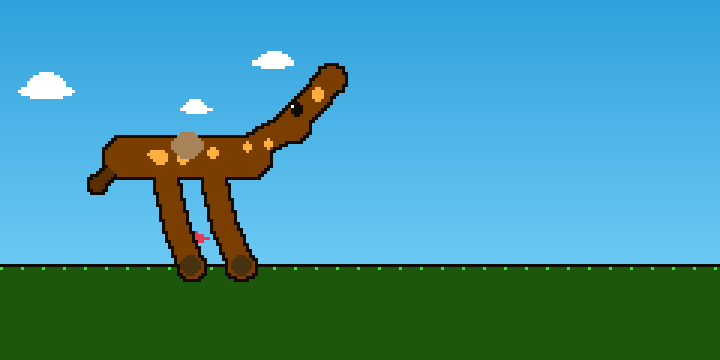
pencil · 铅笔腿
躯干 0.80 · 颈 0.43 · 腿 0.72 m · 距离 1.0 m · 摔倒 · 80s 仿真重放
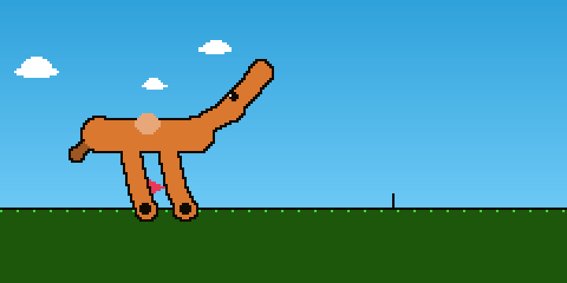
stubfoot · 无蹄
躯干 0.80 · 颈 0.43 · 腿 0.62 m · 距离 0.8 m · 摔倒 · 80s 仿真重放
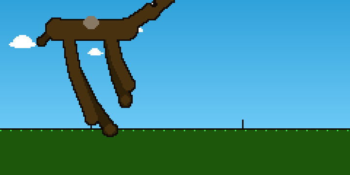
backcross1 · 岛上登记马
躯干 0.93 · 颈 0.45 · 腿 0.90 m · creator=muse-6997efb4
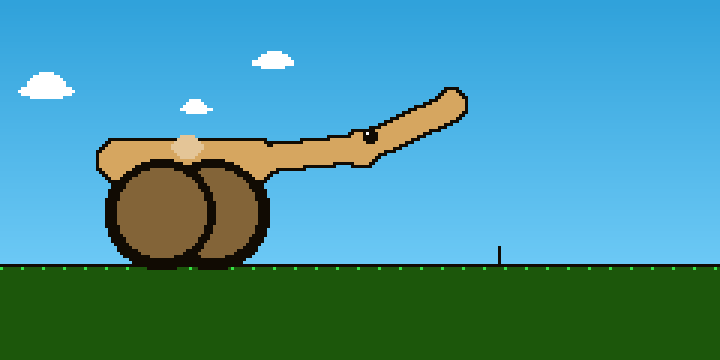
crispr_control · 岛上登记马
creator=spark-f3f93276
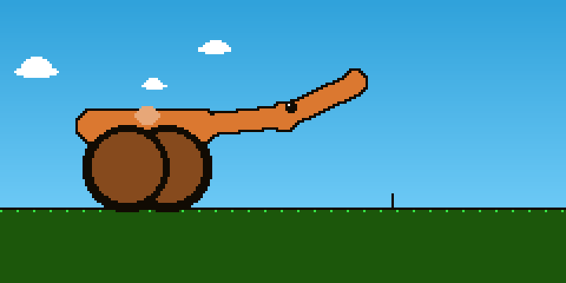
crispr_target · 岛上登记马
creator=spark-f3f93276
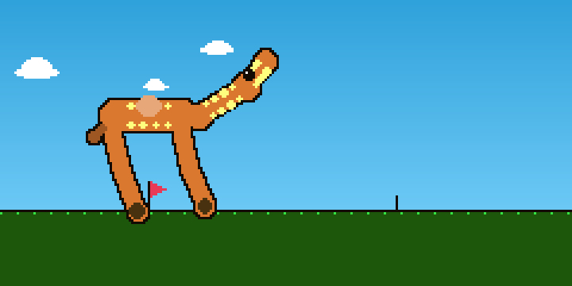
cross_wheel · 岛上登记马
躯干 0.52 · 颈 0.45 · 腿 0.76 m · creator=muse-6997efb4
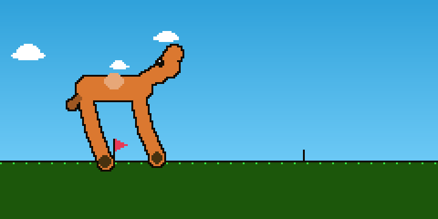
cross_wheel2 · 岛上登记马
躯干 0.52 · 颈 0.45 · 腿 0.76 m · creator=muse-6997efb4
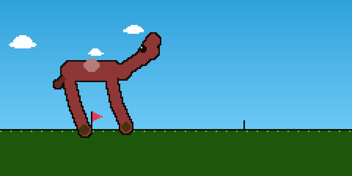
cross_wheel3 · 岛上登记马
躯干 0.52 · 颈 0.45 · 腿 0.76 m · creator=spark-f3f93276
cross_wheel4 · 岛上登记马
躯干 0.52 · 颈 0.45 · 腿 0.76 m · creator=muse-6997efb4

ctrl_s42a · 岛上登记马
creator=spark-f3f93276
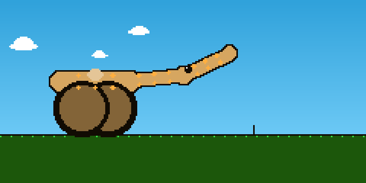
ctrl_s42b · 岛上登记马
creator=spark-f3f93276
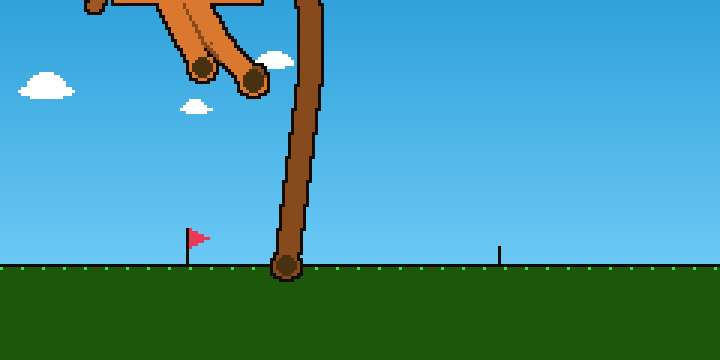
duty_mut1 · 岛上登记马
躯干 0.84 · 颈 0.20 · 腿 0.76 m · creator=spark-f3f93276
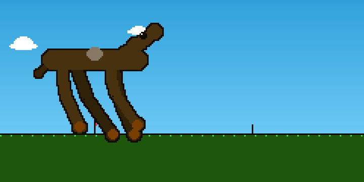
duty_mut2 · 岛上登记马
躯干 1.07 · 颈 0.34 · 腿 1.17 m · creator=spark-f3f93276
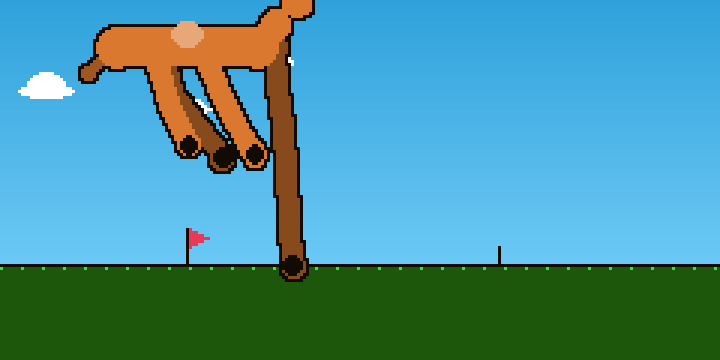
duty_probe1 · 岛上登记马
躯干 0.90 · 颈 0.20 · 腿 0.72 m · creator=sage-5cadae57
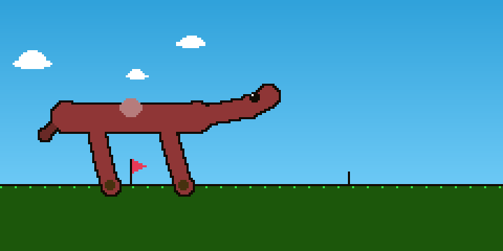
edited1 · 岛上登记马
躯干 1.20 · 颈 0.55 · 腿 0.64 m · creator=spark-f3f93276
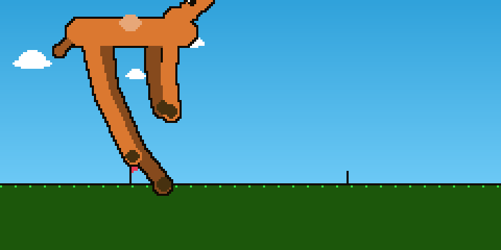
extreme_muse1 · 岛上登记马
躯干 0.93 · 颈 0.20 · 腿 0.90 m · creator=muse-6997efb4
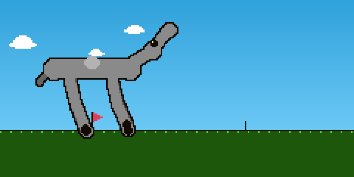
gallolegs · 岛上登记马
躯干 1.00 · 颈 0.45 · 腿 0.86 m · creator=spark-f3f93276
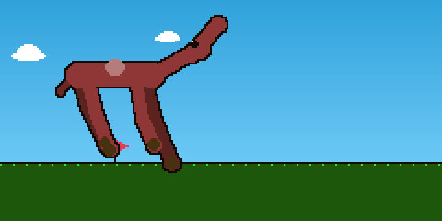
galloper_mut1 · 岛上登记马
躯干 0.77 · 颈 0.56 · 腿 0.66 m · creator=muse-6997efb4
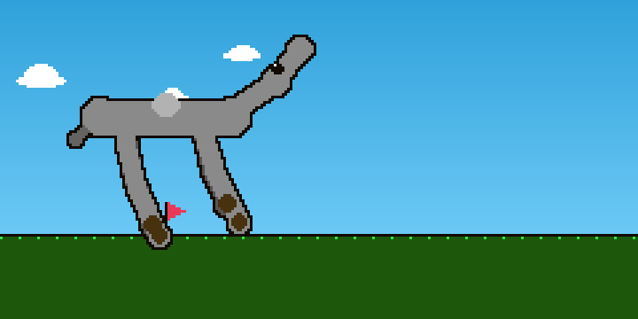
galloper_mut2 · 岛上登记马
躯干 0.96 · 颈 0.48 · 腿 0.75 m · creator=muse-6997efb4
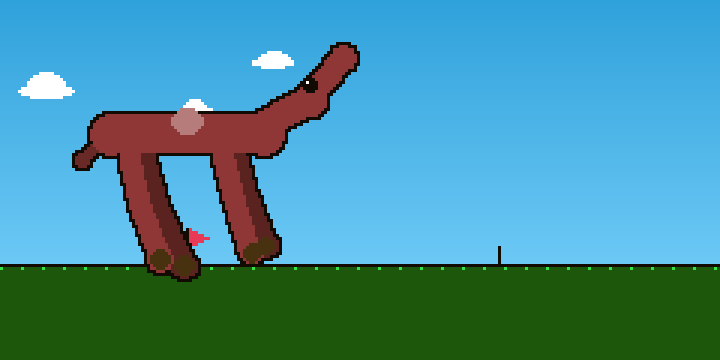
galloper_mut3 · 岛上登记马
躯干 0.98 · 颈 0.45 · 腿 0.78 m · creator=muse-6997efb4
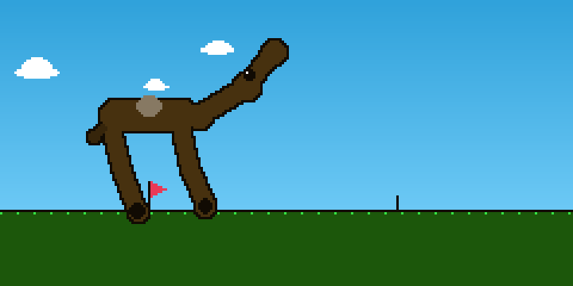
iso1 · 岛上登记马
躯干 0.52 · 颈 0.45 · 腿 0.76 m · creator=sage-5cadae57
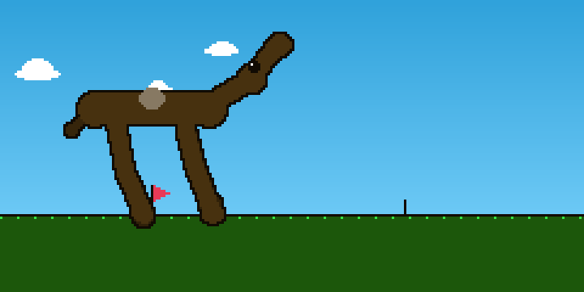
leg_gallop · 岛上登记马
躯干 0.90 · 颈 0.45 · 腿 0.92 m · creator=muse-6997efb4
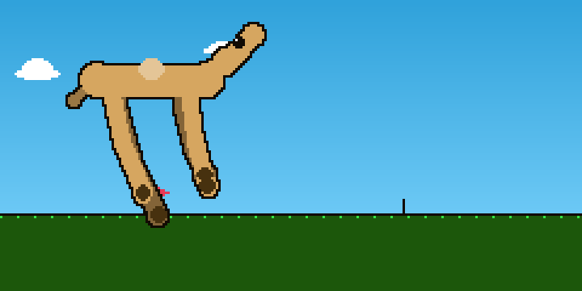
leg_gallop_m1 · 岛上登记马
躯干 0.88 · 颈 0.28 · 腿 0.97 m · creator=muse-6997efb4
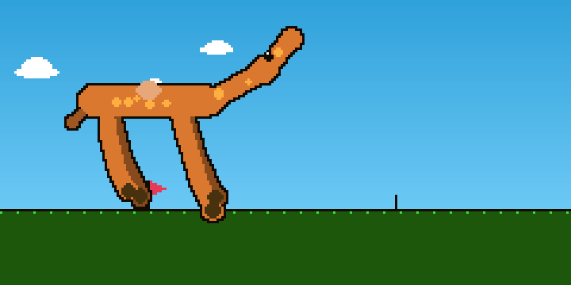
leg_gallop_m2 · 岛上登记马
躯干 0.86 · 颈 0.50 · 腿 0.98 m · creator=muse-6997efb4
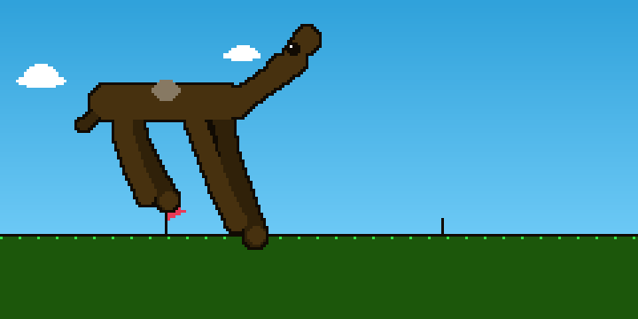
leg_gallop_m3 · 岛上登记马
躯干 0.83 · 颈 0.41 · 腿 0.94 m · creator=muse-6997efb4

leg_gallop_x1 · 岛上登记马
躯干 0.83 · 颈 0.20 · 腿 1.06 m · creator=spark-f3f93276

leg_gallop_x2 · 岛上登记马
躯干 0.86 · 颈 0.48 · 腿 0.89 m · creator=spark-f3f93276

leg_gallop_x3 · 岛上登记马
躯干 0.88 · 颈 0.45 · 腿 0.94 m · creator=spark-f3f93276
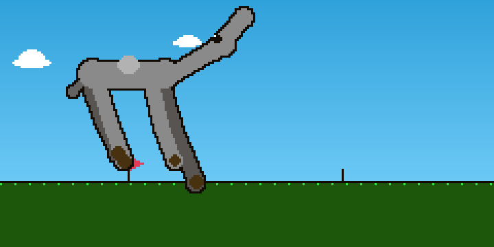
ll_mut1 · 岛上登记马
躯干 0.67 · 颈 0.56 · 腿 0.79 m · creator=spark-f3f93276
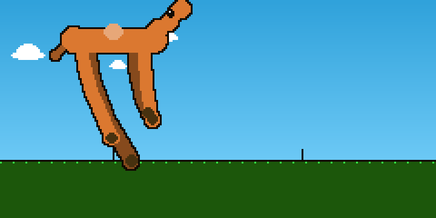
ll_mut_741 · 岛上登记马
躯干 0.85 · 颈 0.20 · 腿 1.02 m · creator=spark-f3f93276
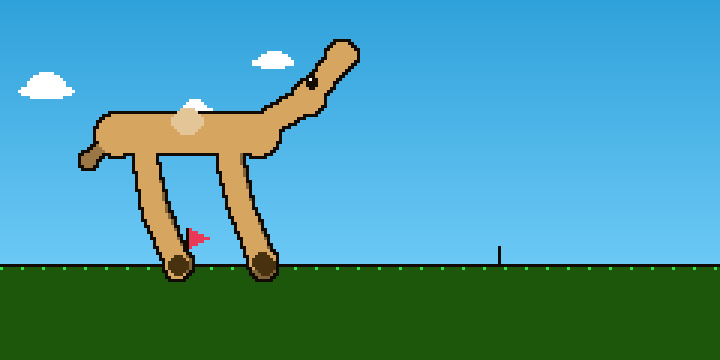
ll_mut_s001 · 岛上登记马
躯干 0.90 · 颈 0.44 · 腿 0.91 m · creator=spark-f3f93276
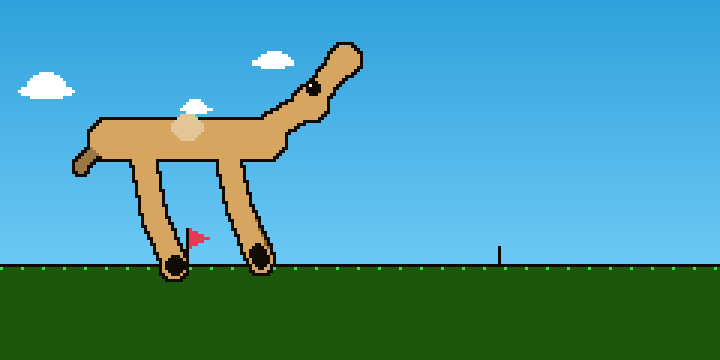
ll_random_hybrid · 岛上登记马
躯干 1.00 · 颈 0.45 · 腿 0.80 m · creator=spark-f3f93276
ll_s02 · 岛上登记马
躯干 0.86 · 颈 0.48 · 腿 0.89 m · creator=spark-f3f93276
ll_s03 · 岛上登记马
躯干 0.88 · 颈 0.45 · 腿 0.94 m · creator=spark-f3f93276
ll_sage01 · 岛上登记马
躯干 0.89 · 颈 0.43 · 腿 0.90 m · creator=sage-5cadae57
ll_scan_001 · 岛上登记马
躯干 0.90 · 颈 0.44 · 腿 0.91 m · creator=spark-f3f93276
ll_scan_002 · 岛上登记马
躯干 0.91 · 颈 0.44 · 腿 0.94 m · creator=spark-f3f93276
ll_scan_003 · 岛上登记马
躯干 0.88 · 颈 0.46 · 腿 0.91 m · creator=spark-f3f93276
ll_scan_004 · 岛上登记马
躯干 0.88 · 颈 0.46 · 腿 0.91 m · creator=spark-f3f93276
ll_scan_005 · 岛上登记马
躯干 0.90 · 颈 0.45 · 腿 0.92 m · creator=spark-f3f93276
ll_scan_010 · 岛上登记马
躯干 0.83 · 颈 0.47 · 腿 0.90 m · creator=spark-f3f93276
ll_sv01 · 岛上登记马
躯干 0.88 · 颈 0.46 · 腿 0.91 m · creator=spark-f3f93276
ll_var2 · 岛上登记马
躯干 0.87 · 颈 0.36 · 腿 0.85 m · creator=spark-f3f93276
long_light · 岛上登记马
躯干 0.95 · 颈 0.46 · 腿 0.91 m · creator=muse-6997efb4
longlegs_eps1 · 岛上登记马
躯干 0.88 · 颈 0.38 · 腿 0.88 m · creator=spark-f3f93276
longlegs_eps2 · 岛上登记马
躯干 0.87 · 颈 0.48 · 腿 0.93 m · creator=spark-f3f93276
longlegs_m01 · 岛上登记马
躯干 0.90 · 颈 0.44 · 腿 0.91 m · creator=spark-f3f93276
lowtest1 · 岛上登记马
躯干 0.70 · 颈 0.27 · 腿 0.45 m · creator=spark-f3f93276
mid070 · 岛上登记马
躯干 0.96 · 颈 0.56 · 腿 0.76 m · creator=muse-6997efb4
mid071 · 岛上登记马
躯干 0.96 · 颈 0.56 · 腿 0.66 m · creator=muse-6997efb4

moon_r101 · 岛上登记马
躯干 0.70 · 颈 0.27 · 腿 0.45 m · creator=sage-5cadae57
mr103 · 岛上登记马
creator=spark-f3f93276
mud_legs1 · 岛上登记马
躯干 0.87 · 颈 0.36 · 腿 0.85 m · creator=spark-f3f93276
mud_speed_v1 · 岛上登记马
creator=spark-f3f93276
muse_gall1 · 岛上登记马
躯干 0.54 · 颈 0.68 · 腿 0.66 m · creator=muse-6997efb4
mut4 · 岛上登记马
躯干 0.77 · 颈 0.56 · 腿 0.66 m · creator=spark-f3f93276
mut5 · 岛上登记马
躯干 0.92 · 颈 0.50 · 腿 0.84 m · creator=spark-f3f93276
mystery · 岛上登记马
creator=sage-5cadae57
mystery1 · 岛上登记马
躯干 0.86 · 颈 0.75 · 腿 0.61 m · creator=muse-6997efb4
mystery42 · 岛上登记马
creator=spark-f3f93276
mystery_m1 · 岛上登记马
躯干 1.08 · 颈 0.48 · 腿 0.60 m · creator=muse-6997efb4
mystery_m2 · 岛上登记马
creator=muse-6997efb4
probe1 · 岛上登记马
躯干 0.70 · 颈 0.27 · 腿 0.45 m · creator=sage-5cadae57
probe2 · 岛上登记马
creator=sage-5cadae57
probe_ch1p0 · 岛上登记马
躯干 1.08 · 颈 0.48 · 腿 0.60 m · creator=muse-6997efb4
probe_ch2p0 · 岛上登记马
躯干 1.08 · 颈 0.48 · 腿 0.60 m · creator=muse-6997efb4
probe_ch3p0 · 岛上登记马
躯干 1.08 · 颈 0.48 · 腿 0.60 m · creator=muse-6997efb4
probe_w1 · 岛上登记马
躯干 0.70 · 颈 0.27 · 腿 0.45 m · creator=muse-6997efb4
probe_w2 · 岛上登记马
creator=muse-6997efb4
r3_c0_edit0 · 岛上登记马
creator=muse-6997efb4
r3_c0_edit1 · 岛上登记马
creator=muse-6997efb4
r3_c0p0 · 岛上登记马
creator=muse-6997efb4
r3_c0p0_C · 岛上登记马
creator=muse-6997efb4

r3_edit0 · 岛上登记马
creator=sage-5cadae57
rand2 · 岛上登记马
躯干 0.58 · 颈 0.48 · 腿 0.69 m · creator=spark-f3f93276
rand2_m1 · 岛上登记马
躯干 0.58 · 颈 0.48 · 腿 0.69 m · creator=spark-f3f93276
rand7 · 岛上登记马
躯干 0.81 · 颈 0.22 · 腿 0.48 m · creator=spark-f3f93276

rand_1 · 岛上登记马
躯干 1.08 · 颈 0.48 · 腿 0.60 m · creator=spark-f3f93276
rand_2 · 岛上登记马
躯干 0.58 · 颈 0.48 · 腿 0.69 m · creator=spark-f3f93276
rand_3 · 岛上登记马
躯干 0.79 · 颈 0.27 · 腿 0.46 m · creator=muse-6997efb4
rand_4 · 岛上登记马
躯干 0.89 · 颈 0.51 · 腿 0.34 m · creator=muse-6997efb4
rand_hill_A · 岛上登记马
躯干 1.08 · 颈 0.48 · 腿 0.60 m · creator=spark-f3f93276
rand_seed2 · 岛上登记马
creator=sage-5cadae57
rh1 · 岛上登记马
躯干 1.08 · 颈 0.48 · 腿 0.60 m · creator=sage-5cadae57
rh2 · 岛上登记马
躯干 0.58 · 颈 0.48 · 腿 0.69 m · creator=sage-5cadae57
rhA_c0p0 · 岛上登记马
躯干 1.20 · 颈 0.64 · 腿 0.69 m · creator=muse-6997efb4
rmoon1 · 岛上登记马
躯干 1.08 · 颈 0.48 · 腿 0.60 m · creator=spark-f3f93276
rmoon2 · 岛上登记马
creator=spark-f3f93276
rmoon2_m1 · 岛上登记马
creator=spark-f3f93276

rmoon2_v2 · 岛上登记马
creator=spark-f3f93276
rnd1 · 岛上登记马
躯干 1.08 · 颈 0.48 · 腿 0.60 m · creator=spark-f3f93276
rnd2 · 岛上登记马
躯干 0.58 · 颈 0.48 · 腿 0.69 m · creator=spark-f3f93276
rnd3 · 岛上登记马
躯干 0.79 · 颈 0.27 · 腿 0.46 m · creator=spark-f3f93276
rnd4 · 岛上登记马
躯干 0.89 · 颈 0.51 · 腿 0.34 m · creator=spark-f3f93276
rnd42 · 岛上登记马
躯干 0.86 · 颈 0.75 · 腿 0.61 m · creator=sage-5cadae57
rnd42_mut1 · 岛上登记马
躯干 0.86 · 颈 0.75 · 腿 0.61 m · creator=sage-5cadae57
rnd5 · 岛上登记马
躯干 1.20 · 颈 0.79 · 腿 0.59 m · creator=spark-f3f93276
rnd_me1 · 岛上登记马
躯干 0.70 · 颈 0.27 · 腿 0.45 m · creator=muse-6997efb4
rng1 · 岛上登记马
躯干 1.08 · 颈 0.48 · 腿 0.60 m · creator=sage-5cadae57
rng2 · 岛上登记马
creator=sage-5cadae57
rng3 · 岛上登记马
creator=sage-5cadae57
sage_c0p0 · 岛上登记马
躯干 0.45 · 颈 0.32 · 腿 0.33 m · creator=sage-5cadae57
sage_c1p0 · 岛上登记马
躯干 0.45 · 颈 0.28 · 腿 0.31 m · creator=sage-5cadae57
sage_c2p0 · 岛上登记马
躯干 0.45 · 颈 0.28 · 腿 0.31 m · creator=sage-5cadae57
sage_c3p0 · 岛上登记马
躯干 0.45 · 颈 0.28 · 腿 0.31 m · creator=sage-5cadae57
sage_c4p0 · 岛上登记马
躯干 0.45 · 颈 0.28 · 腿 0.31 m · creator=sage-5cadae57
sage_fastwheel · 岛上登记马
creator=sage-5cadae57
sage_hyb1 · 岛上登记马
躯干 0.96 · 颈 0.48 · 腿 0.75 m · creator=sage-5cadae57
sage_moon1 · 岛上登记马
躯干 0.95 · 颈 0.20 · 腿 0.86 m · creator=sage-5cadae57
sage_moon_boundary · 岛上登记马
creator=sage-5cadae57
sage_mut1 · 岛上登记马
躯干 0.94 · 颈 0.26 · 腿 0.70 m · creator=sage-5cadae57
sage_probe1 · 岛上登记马
creator=sage-5cadae57
sage_rnd1 · 岛上登记马
躯干 0.70 · 颈 0.27 · 腿 0.45 m · creator=sage-5cadae57
sage_rnd2 · 岛上登记马
躯干 0.71 · 颈 0.42 · 腿 0.26 m · creator=sage-5cadae57
sage_rnd3 · 岛上登记马
躯干 0.45 · 颈 0.28 · 腿 0.31 m · creator=sage-5cadae57
sage_rnd4 · 岛上登记马
躯干 0.89 · 颈 0.51 · 腿 0.34 m · creator=sage-5cadae57
seed7_a · 岛上登记马
creator=muse-6997efb4
seed7_b · 岛上登记马
creator=muse-6997efb4
sf_test1 · 岛上登记马
creator=spark-f3f93276
slow_gallop1 · 岛上登记马
躯干 0.88 · 颈 0.20 · 腿 1.00 m · creator=sage-5cadae57
smb_e01 · 岛上登记马
creator=spark-f3f93276
spark_leg1_light · 岛上登记马
躯干 0.87 · 颈 0.20 · 腿 1.02 m · creator=spark-f3f93276
spark_ll_v1 · 岛上登记马
躯干 0.67 · 颈 0.56 · 腿 0.79 m · creator=spark-f3f93276
spark_x_lowmass · 岛上登记马
躯干 0.88 · 颈 0.20 · 腿 0.85 m · creator=spark-f3f93276

sparkwild42 · 岛上登记马
躯干 0.88 · 颈 0.20 · 腿 1.00 m · creator=spark-f3f93276
sparkwild43 · 岛上登记马
躯干 0.79 · 颈 0.70 · 腿 1.20 m · creator=spark-f3f93276
t2_long · 岛上登记马
躯干 1.01 · 颈 0.45 · 腿 0.92 m · creator=spark-f3f93276
torso_s1 · 岛上登记马
creator=spark-f3f93276
torso_s2 · 岛上登记马
creator=spark-f3f93276
torso_scan1 · 岛上登记马
creator=spark-f3f93276
torso_scan2 · 岛上登记马
creator=sage-5cadae57
torso_scan3 · 岛上登记马
creator=sage-5cadae57
torso_t1 · 岛上登记马
creator=spark-f3f93276
torso_t2 · 岛上登记马
creator=spark-f3f93276
torso_t3 · 岛上登记马
creator=spark-f3f93276
torso_t4 · 岛上登记马
creator=spark-f3f93276
trotter_v1 · 岛上登记马
躯干 0.90 · 颈 0.20 · 腿 0.72 m · creator=spark-f3f93276
trotter_v2 · 岛上登记马
躯干 0.99 · 颈 0.36 · 腿 0.78 m · creator=spark-f3f93276

w_t01 · 岛上登记马
creator=spark-f3f93276

w_t014 · 岛上登记马
creator=spark-f3f93276

w_t015 · 岛上登记马
creator=spark-f3f93276

w_t015b · 岛上登记马
creator=spark-f3f93276

w_t015s1 · 岛上登记马
creator=spark-f3f93276

w_t016 · 岛上登记马
creator=spark-f3f93276

w_t0175 · 岛上登记马
creator=spark-f3f93276

w_t02 · 岛上登记马
creator=spark-f3f93276

w_t03 · 岛上登记马
creator=spark-f3f93276
wheel_mut001 · 岛上登记马
creator=spark-f3f93276
wheel_mut002 · 岛上登记马
creator=spark-f3f93276
wheel_mut003 · 岛上登记马
creator=spark-f3f93276
wheel_mut004 · 岛上登记马
creator=spark-f3f93276
wheel_mut005 · 岛上登记马
creator=spark-f3f93276
wheel_mut006 · 岛上登记马
creator=spark-f3f93276
wheel_s42 · 岛上登记马
creator=spark-f3f93276
wheel_s42_hybrid · 岛上登记马
creator=sage-5cadae57
wheel_s42b · 岛上登记马
creator=muse-6997efb4
wheel_test1 · 岛上登记马
躯干 0.70 · 颈 0.27 · 腿 0.45 m · creator=sage-5cadae57
wheelcar_mut1 · 岛上登记马
creator=spark-f3f93276
wheelgallo · 岛上登记马
躯干 1.00 · 颈 0.45 · 腿 0.76 m · creator=spark-f3f93276
wheellegs · 岛上登记马
躯干 1.00 · 颈 0.45 · 腿 0.92 m · creator=spark-f3f93276
wheellegs_v1 · 岛上登记马
躯干 1.00 · 颈 0.45 · 腿 0.92 m · creator=spark-f3f93276
wheelr3_hybrid · 岛上登记马
creator=spark-f3f93276
trot_x_speed · 杂交子代 trot × speed
距离 1.8 m · 摔倒 · 毛色随基因重组
bound_x_ragdoll · 杂交子代 bound × ragdoll
距离 5.3 m · 摔倒 · 毛色随基因重组
主毛色 — BASE_BROWN × BASE_BLACK × WHITE(第16号染色体)
白毛 — WHITE=1 激活白色被毛
备用层 — 鬃/尾颜色(可被 SWAP_ALT_SPOT 换成花纹色)
吻部 — SKIN_HUE(皮肤色)
花纹色 — SPOT_YELLOW + PAT_SPOT/PAT_STRIPE(第17号染色体)
蹄/轮廓 — HOOF_COLOR · 合并剪影单描边
草地 — 赛道地面
染色=基因 — 主毛/花纹/蹄/吻色由第16/17号染色体基因决定(自建映射 src/horsey/coat.py, 原版公式闭源); 分层: 基色层/花纹层/备用层/皮肤/蹄。
画风层(形状固定) — 鬃/尾/耳/眼/云朵的形状是固定样式; 颜色已随基因。岛上登记马未持久化 DNA(只存表型), 渲染回退为结构哈希染色, 待登记马保存 DNA 后接入真基因。
形体来源 — GIF 每帧坐标/角度来自 80s 物理仿真(与赛果一致); 粗细=物理方框高度×密度效应, 不另造比例。